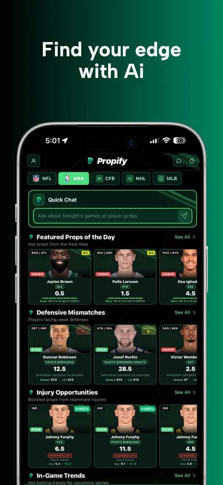
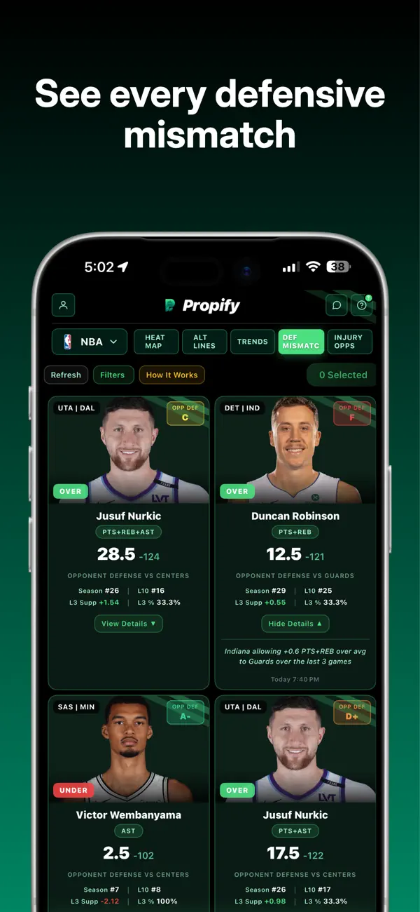
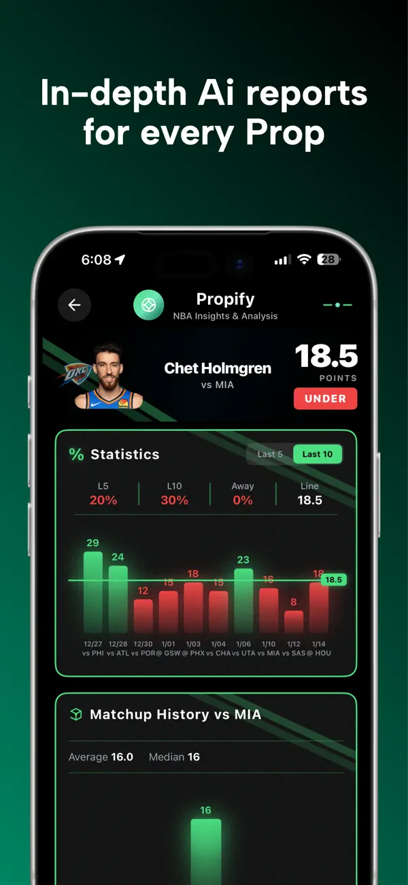
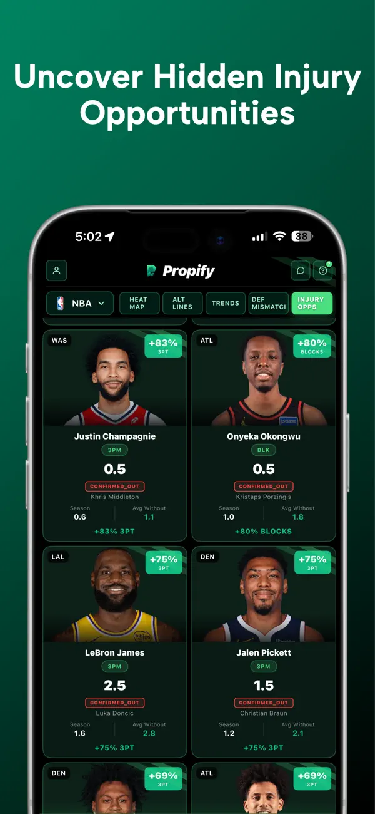
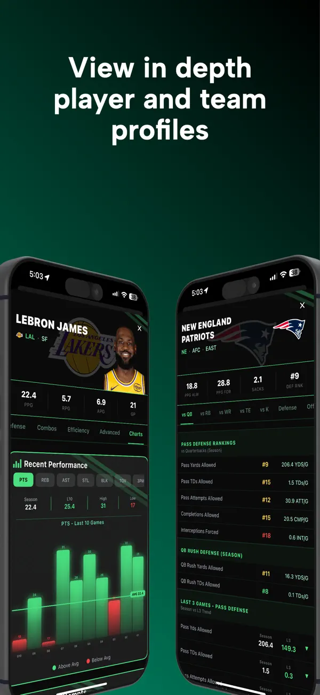
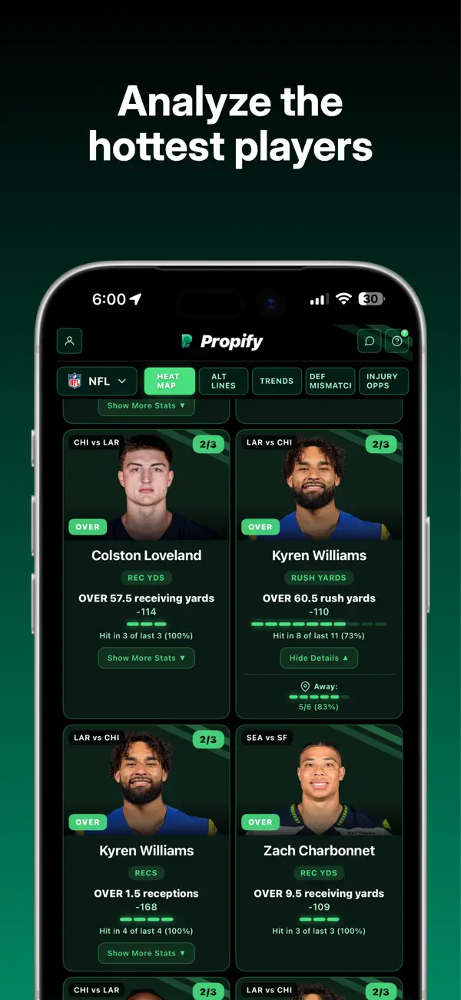
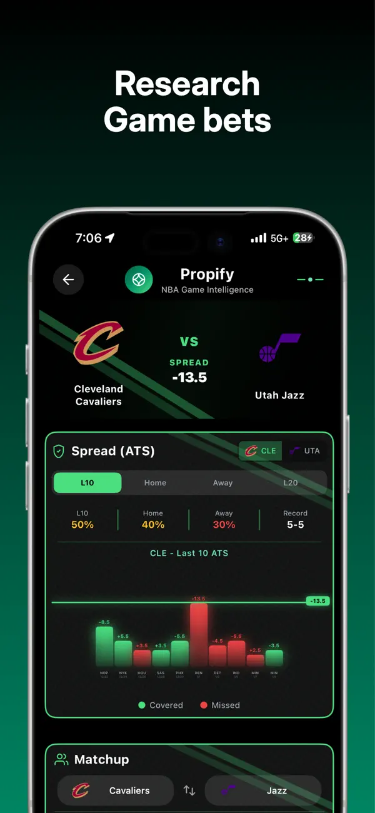

Choose a league and explore the slate. Get straight to the players, teams, and matchups you care about.
Your game. A clearer picture.
SEE THE NUMBERS BEHINDEVERY BET.
Less digging.
More understanding.
Player props, matchup context, and AI analysis. Your research, all in one place.
Download on theApp StoreFor iPhone & iPad · Free to download
The full story.
Before game time.
One app. Across the game.
NBANFLMLB
Built for your research.Every prop has a story.
Recent form. The matchup.
The details that change the picture.
Propify brings it all together.
Turn scattered stats into research you can actually use.
From question to context
A better read on the game.
Four simple steps.
01 / 04
Inside the Propify appCompare defensive matchups, recent form, and player trends. See what deserves a closer look.
Open an AI report for the context behind a prop—from hit rates and matchup history to the bigger picture.
Bring player and team research together. Understand the numbers before deciding what comes next.
Inside Propify
The details make
the difference.
Matchup intelligenceSee the matchup.
See the matchup.
Not just the average.
A season average is only the start. Explore how an opponent defends each position and prop type to understand the matchup in front of you.
- Defensive rankings by position
- Player props in matchup context
- Clear comparisons across the slate

A different perspective on every prop
AI prop analysisMore context.
More context.
Less tab switching.
Get a focused report that connects recent performance, matchup history, and relevant trends. The numbers and the takeaway, together.
- Recent hit rates and performance charts
- Season and short-term comparisons
- Concise, prop-specific AI summaries

The research behind the line
Injury contextWhen the lineup changes,
When the lineup changes,
the picture changes.
One absence can reshape a team’s rotation. Explore injury-related opportunities and see which players may take on a different role.
- Teammate injury context
- Potential shifts in player opportunity
- Relevant props brought into focus

Look at what changes the game
Your research, connected
Everything in your corner.
Performance heat map
Spot player trends across the slate.
Player & team profiles
Go deeper on the names you follow.
Game research
Explore team matchups and game lines.
AI prop scanner
Start your research from a bet-slip screenshot.
Recent performance
See hot and cold streaks in context.
Multi-league coverage
Research NBA, NFL, and MLB in one app.
Made for your iPhone
Your research.
Ready to go.



Actual Propify App Store screenshots. Examples show historical data.
One membership. The full picture.
Put the research
on your side.
Full access to Propify’s analysis tools, player insights, and multi-league research.
Start with 3 days free.
Try every feature with the yearly plan. Subscription renews annually after the trial unless canceled.
What is Propify?
Propify is a sports analytics app that brings player props, matchup data, performance trends, and AI analysis together to help you research the game.
Which sports can I research?
Propify’s App Store listing includes NBA, NFL, and MLB coverage. Available players, props, and data depend on the league and schedule.
Can I upload a bet slip?
Yes. The AI Prop Scanner lets you upload a screenshot of your parlay or player props, parses the lines, and returns insights for your research.
Is Propify free?
The app is free to download. Features require a subscription. The yearly plan includes a 3-day free trial; the monthly plan has no trial. See the app for current prices and terms.
Does Propify place bets or guarantee results?
No. Propify is an analytics app, not a sportsbook. It does not accept or place wagers, and analysis cannot guarantee any outcome. The app is for informational and entertainment purposes.
Where can I download it?
Propify is available on the Apple App Store for iPhone and iPad. The listing requires iOS 15.1 or later.
KNOW THE GAME.
SEE THE PICTURE.
Your next research session starts here.
Download Propify for iOS Free to download. Subscription required for features.